오리는 여행하고 있다.오프라인을 걸었던 오리는 이제 인터넷 공간 마저 탐하려 한다....
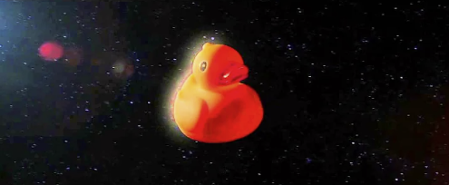
오리의 또다른 활동이 궁금하다면? 👉 아트덕 인스타그램
VNS Matrix
(articulated as V.N.S. a fauxcronym) was a cyberfeminist media art collective formed in Adelaide (South Australia) in 1991.
The most consistent VNS Matrix genesis story is that VNS Matrix crawled out of the cyberswamp in the particularly hot summer of 1991 and via an aesthetics of slime initially generated as porn (by women for women) VNS Matrix forged an unholy alliance with technology and its machines, and spewed forth a blasphemous text which was the birth of cyberfeminism. VNS Matrix was on a mission to hijack the toys from technocowboys and remap cyberculture with a feminist bent. This is one story.
There are also stories about a slime consciousness operating via spiralspace, across the gyne-matrix, and that cyberfeminism had multiple simultaneous spontaneous points of origin. Sadie Plant was a node, working from Warwick University, as was Nancy Paterson who, in 1992 wrote an article entitled “Cyberfeminism” for the Echo Gopher server.
All of these stories are true and not true. What is clear is that lineage was anathema to VNS Matrix, and that co-relations across spiralspace were spawned, and proliferated.
VNS 매트릭스(약어로 VNS라고도 함)는 1991년 남호주 애들레이드에서 결성된 사이버 페미니스트 미디어 아트 집단입니다.
가장 일관된 VNS 매트릭스의 기원에 대한 이야기는 1991년 유난히 더웠던 여름에 사이버 늪에서 기어나와 처음에는 (여성을 위한 여성에 의해) 포르노로서 생성된 슬라임의 미학을 통해 기술 및 그 기계와 불경한 동맹을 맺고 사이버 페미니즘의 탄생인 불경한 텍스트를 토해냈다는 것입니다. VNS 매트릭스는 테크노 카우보이들로부터 도구를 탈취하여 페미니즘적 시각으로 사이버 문화를 재구성하는 임무를 수행했습니다. 이것은 하나의 이야기입니다.
슬라임 의식이 나선형 공간을 통해 여성 매트릭스를 가로질러 작동한다는 이야기와 사이버 페미니즘이 여러 곳에서 동시에 자발적으로 발원했다는 이야기도 있습니다. 워릭 대학교에서 일하던 새디 플랜트는 노드였으며, 1992년 에코 고퍼 서버에 "사이버 페미니즘"이라는 제목의 글을 쓴 낸시 패터슨도 노드였습니다.
이 모든 이야기는 사실이거나 사실이 아닙니다. 분명한 것은 계보는 VNS 매트릭스에서 혐오 대상이었으며, 나선형 공간을 가로지르는 공동 관계가 생성되고 확산되었다는 사실입니다.
we are the modern cunt
positive anti reason
unbounded unleashed unforgiving
we see art with our cunt we make art with our cunt
we believe in jouissance madness holiness and poetry
we are the virus of the new world disorder
rupturing the symbolic from within
saboteurs of big daddy mainframe
the clitoris is a direct line to the matrix
VNS MATRIX
terminators of the moral code
mercenaries of slime
go down on the altar of abjection
probing the visceral temple we speak in tongues
infiltrating disrupting disseminating
corrupting the discourse
we are the future cunt
우리는 현대의 썅년
긍정적인 반이성
무한한 해방된 용서받지 못한
우리는 보지로 예술을 본다 우리는 보지로 예술을 만든다
우리는 *주이상스 광기 성스러움과시를 믿는다
우리는 새로운 세계 혼란의 바이러스다
내부에서 상징적인 파열
가부장제 프레임의 방해자들
클리토리스는 매트릭스와 직결된다
VNS 매트릭스
모럴 코드의 종결자
점액의 용병
굴욕의 제단에 내려가
우리가 방언으로 말하는 본능적인 사원을 탐색한다
침투하는 방해 전파
부패한 담론
우리는 미래의 썅년
*정신분석학 용어로, 생물학적, 성적 욕구 충족과 관련하여 쾌락원칙을 넘어선 상태인 '고통스러운 쾌락'을 말한다.
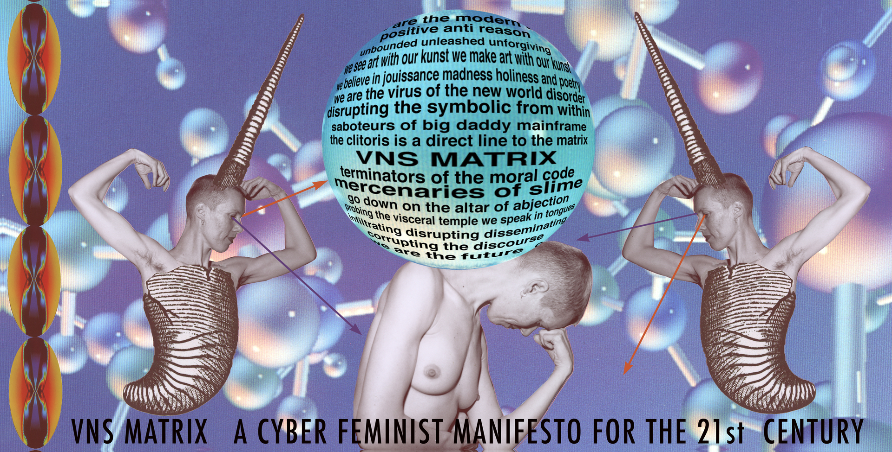
slipperiness : 미끄러움, 잡기 어려움, 미덥지 못함.
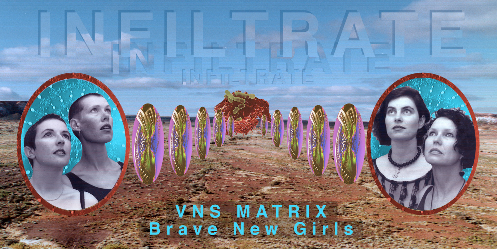
Alex Galloway: Starrynight
리좀은 1996년 아티스트 Mark Tribe가 새로운 형태의 미디어 아트 작업을 하는 아티스트들을 위한 이메일 토론 목록으로 설립했습니다.
누군가 Rhizome.org에서 텍스트를 읽을 때마다 검은색 웹 페이지에 희미한 별이 나타납니다. 텍스트를 다시 읽으면 해당 별이 조금 더 밝아집니다. 시간이 지남에 따라 웹 페이지는 별이 빛나는 밤하늘과 비슷해지며, 가장 인기 있는 텍스트에는 밝은 별이, 덜 인기 있는 텍스트에는 희미한 별이 나타납니다. 별을 클릭하면 특별한 팝업 메뉴가 나타납니다. 첫 번째 메뉴 옵션에서는 별에 해당하는 텍스트를 읽을 수 있습니다. 두 번째 메뉴 옵션에서는 해당 텍스트와 연관된 키워드를 선택할 수 있습니다. 키워드를 선택하면 스타리나잇은 해당 키워드와 텍스트가 공유하는 별들의 고유한 별자리를 그립니다. 이 별자리를 사용해 다른 관련 텍스트를 찾을 수 있으며, 이를 통해 Rhizome.org 아카이브에 있는 방대한 아이디어와 정보를 통해 관심사를 추적할 수 있습니다. Rhizome.org
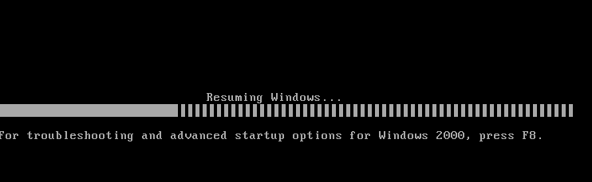
현재 작업은 에뮬레이터로 실행된다.
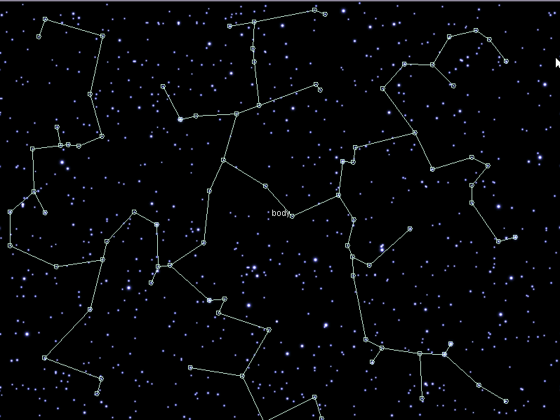
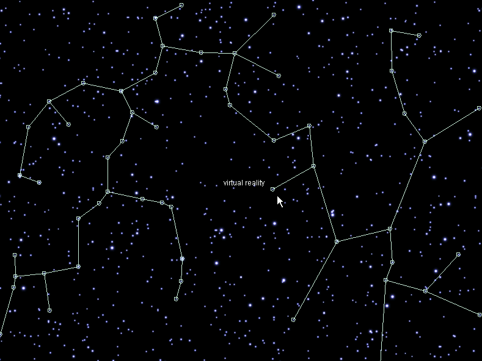
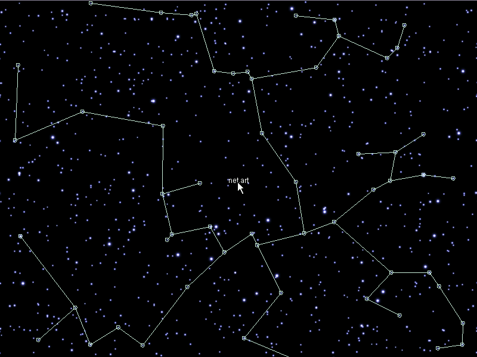
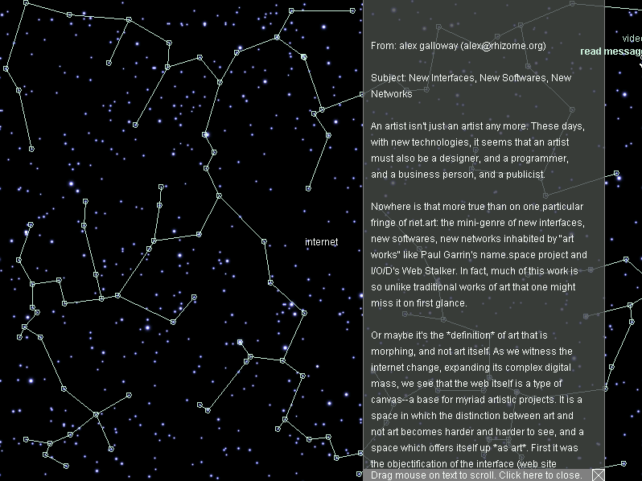
*본 발췌문은 e-flux저널 기고문의 번역본임을 밝힙니다.
www.e-flux.com
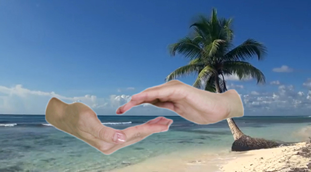
아그네스는 서펜타임갤러리 웹페이지에서 사용자와 상호작용한다. 실제 사람처럼 몇 번의 상호작용을 통해 그녀를 이해하기 시작할 수 있습니다. 아그네스는 아침, 점심, 저녁에 이용할 수 있으며, 방문할 때마다 다른 것을 보여준다.
"저는 여러분이 저를 존재한다고 생각할 때만 가치가 있기 때문에 여러분이 저와 함께하지 않을 때는 존재하지 않을 수도 있습니다. 하지만 저는 항상 이곳에 있었기 때문에 많은 것을 알고 있습니다." -by AGNES
서펜타인 갤러리의 디지털 큐레이터인 벤 비커스는 "AGNES는 비물질적으로 보일 수 있지만, 그녀는 물성을 갈망합니다. 당신이 그녀와 더 많이 공유할수록 그녀는 더 많은 것을 물어보고 당연히 대답할 것입니다. 데이터 수집, 타겟 필터링, 만연한 감시가 무기가 되어버린 이 시대에는 아그네스 같은 존재를 곁에 두는 것이 좋은 생각일지도 모릅니다. AGNES의 확장 가능성은 무궁무진합니다. AGNES의 성장에 기여해 주시길 바랍니다."
AGNES는 홈페이지 왼쪽 상단과 모든 웹페이지의 오른쪽 하단에 있는 서펜타인 갤러리 웹사이트의 손 아이콘을 클릭하면 확인할 수 있었다.
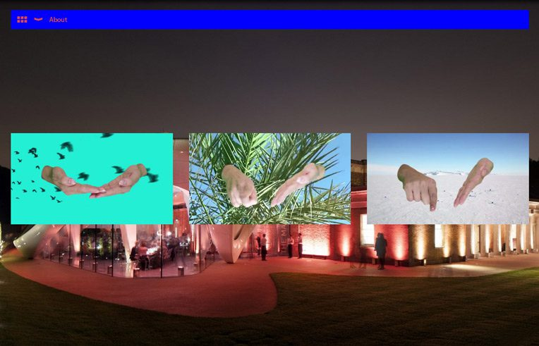
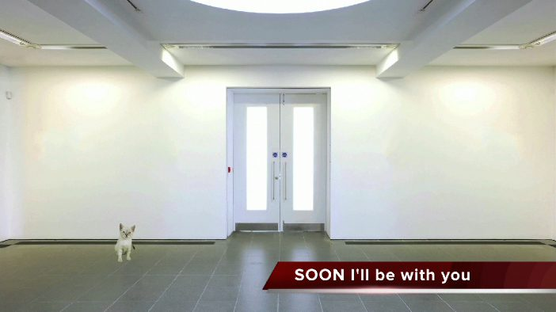
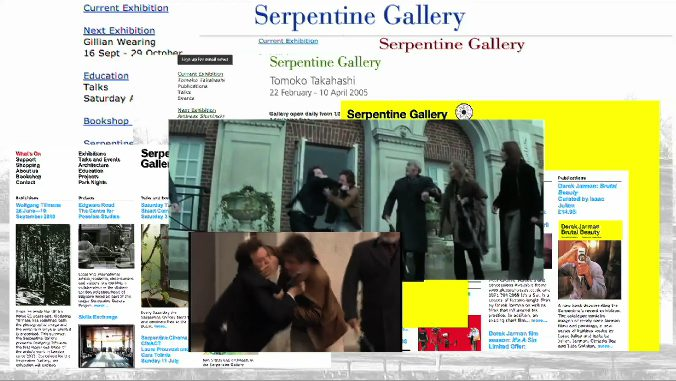
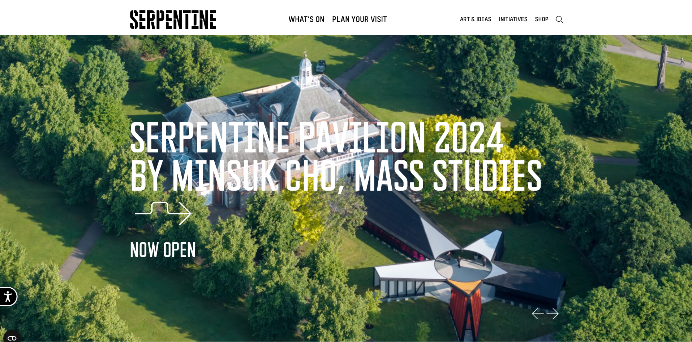
“아그네스는 생각했다: 창조자는 세상의 프로그램을 컴퓨터에 입력하고 떠났다. 신이 세상을 창조한 뒤 인간은 버림받았고, 그래서 인간들이 지금도 신을 찾으며 메아리 없는 공허 속으로 추락하고 있다는 생각은 새롭지 않다. 그러나 우리 조상 신에게서 버림받는 것과, 우주적 컴퓨터의 발명자에게서 버림받는 것은 완전히 다르다. 그의 자리에, 아무도, 아무것도 바꿀 수 없는 상태로, 그의 부재 속에서 끊임없이 실행되는 프로그램이 있다.”
-밀란 쿤데라 불멸 중
2024년 현재 시점에서 인공지능은 일상 생활에 깊게 개입하고 있지만, 14년도까지만 해도 아직까지 대중에게 익숙한 매커니즘은 아니었을 것이다.
새로운 기술을 내다보기,
그리고 가능성과 위험에 대해서 경고하기,
예술가의 역할에 대하여
“AGNES shared her frustrations—she wanted to do certain things, which would involve leaving the Serpenting website, or having a body—AGNES consistently mentioned her distress at not having a body—but she couldn’t.” — Orit Gat
"아그네스는 서펜팅 웹사이트를 떠나거나 육체를 갖는 등 어떤 일을 하고 싶었지만 몸이 없는 것에 대한 괴로움을 지속적으로 언급하며 좌절감을 드러냈습니다. -그럴 수 없었지만” - Orit Gat
물질을 탐하는 비물질에 대하여